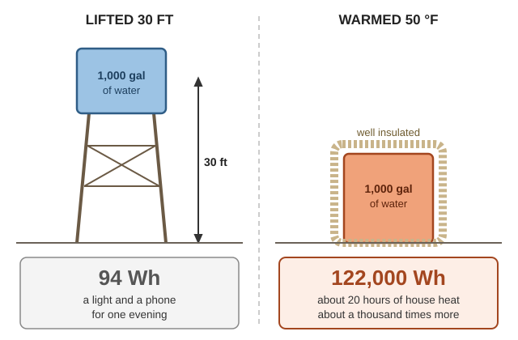
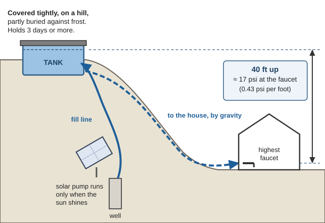
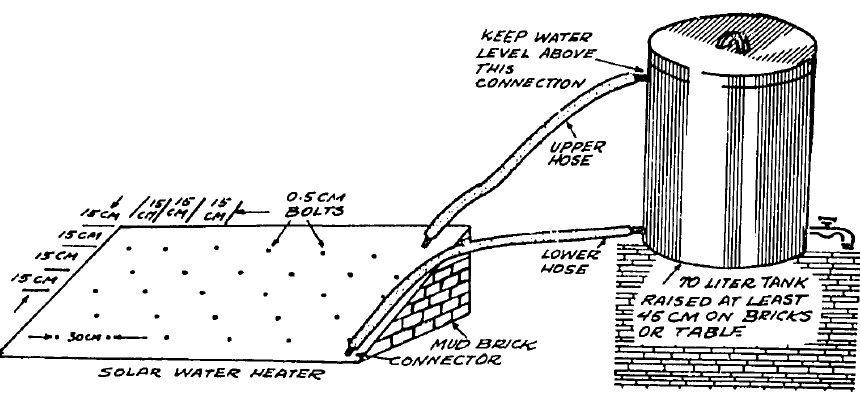
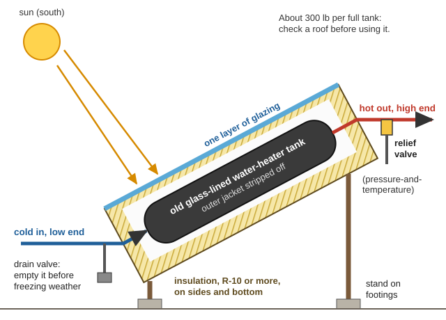
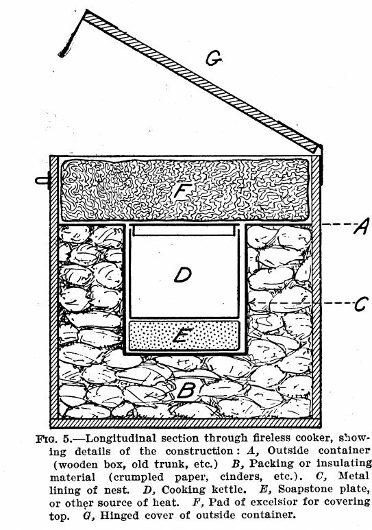
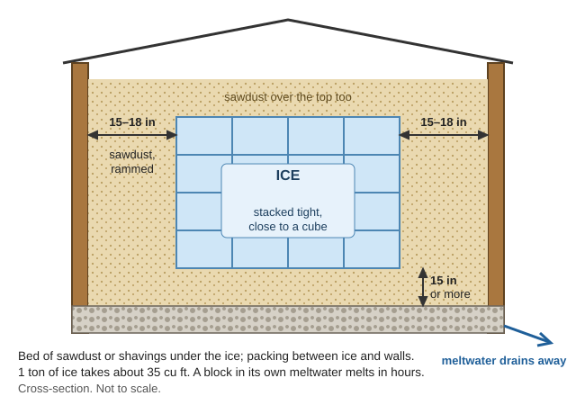

How to keep the energy from a sunny afternoon, a hot fire, a cold night or a running creek for later, when batteries are worn out or gone. It covers gravity batteries (lifting water, sand or weights) and why they hold so little; heat stored in water, stone and masonry; cold stored as ice and cold water; compressed air and flywheels; and the simplest store of all, doing the work while the power is there. The numbers come from the books on this drive. Where this guide works one out, it says (arithmetic), and you can check it with the Practical Math guide or the Calculator. The two DOE books added for this guide are in Off-Grid-Power\Energy-Storage.
The short version
Lifting things stores almost nothing. 1,000 gallons of water raised 30 ft holds about 94 watt-hours: a light and a phone for one evening (arithmetic). The DOE's example: hoist a car 100 ft and you get back "only about 800 watts for ten minutes" (Wind Power for Farms, p. 129).
Heat stores about a thousand times more. The same 1,000 gallons warmed 50 °F holds about 122,000 watt-hours(arithmetic). Store energy as heat (water, stone, masonry) and cold (ice, cold water), not as height.
Spare electricity goes into hot water. An electric water heater stores it at close to 100%; batteries manage 60 to 80% (Wind Power for Farms, p. 130).
Pump the water you need anyway into a high tank while the sun shines. The tank is the battery (NRCS Tech Note 1, p. 27).
Insulation decides how long any store lasts: hot, cold or ice.
Skip compressed air and homemade flywheels. Compressed air is 10 to 15% efficient, and fast wheels can burst.
A woodpile is a battery too. One pound of dry wood holds about twice what a 12-volt, 100 amp-hour battery holds (arithmetic).
How much each way holds: the honest numbers
Lifting stores weight × height; warming stores weight × degrees × how well it holds heat. Water takes 1 BTU per pound for each °F; dry soil and rock about 0.2 (Fire Weather, p. 12); melting ice soaks up 144 BTU per pound (p. 13). 1 kWh (1,000 watt-hours) = 3,412 BTU, and water weighs 8.34 lb a gallon (Practical Math guide).
Store it as
Example
Holds about
What that runs
Height
A 55-gal drum of water raised 20 ft
3.5 Wh
Less than one phone charge
Height
1 ton (2,000 lb) of sand raised 10 ft
7.5 Wh
A small LED bulb for about an hour
Height
1,000 gal of water raised 30 ft
94 Wh
A light and a phone for an evening
Heat
A 55-gal drum of water warmed 40 °F
18,000 BTU = 5.4 kWh
About an hour of house heat in a cold snap
Heat
1,000 lb of stone heated to about 200 °F
40,000 BTU
About 2 hours of house heat
Heat
1,000 gal of water warmed 50 °F
417,000 BTU = 122 kWh
About 20 hours of house heat
Cold
1 ton of ice melting
288,000 BTU = 84 kWh of cooling
3–4 days of a walk-in farm cooler, which uses about 100 tons a year
Compressed air
An 80-gal shop tank at 150 psi
25–45 Wh you can use
A few minutes of an air tool
Spinning
A 100-lb steel wheel, 2 ft across, at 1,000 rpm
3 Wh
Not worth the danger
Battery, for comparison
12 V × 100 Ah
1,200 Wh
The same as 1,000 gal raised 380 ft
Firewood, for comparison
1 lb of dry wood
8,600 BTU = 2.5 kWh
Twice that battery
(Arithmetic, except the stone row: Aprovecho Capturing Heat Three, p. 16. "House heat" uses Aprovecho's tight house losing about 20,000 BTU an hour, same page; the wood figure is p. 18. The air-tank row assumes the DOE's 10–15% efficiency, below; the farm-cooler figure is USDA FB 475, p. 17.)

The same water holds about a thousand times more energy as heat than as height (a diagram drawn for this guide).
Per cubic foot, water still holds about twice what concrete or stone does: 62 lb × 1 against 144 lb × 0.2 (arithmetic). Aprovecho puts it as "Per pound water stores 5 times more heat than rock", and the rock's weight "offsets this difference to some degree" (p. 9; water and sand compared).
Gravity that works: store the water, not the electricity
A tank of water up the hill doesn't store much energy, but it stores something better: water you can use with no power at all. Pump it when the sun shines, the wind blows or the creek runs, and let gravity deliver it later.
The tank is the cheapest battery for a solar pump: "The most effective and typically least expensive means of utilizing excess incoming solar energy is to incorporate a water storage tank" (NRCS Tech Note 1, p. 27). North Dakota's NRCS requires 3 days of storage on solar systems (same page).
Put it high enough. The tank must sit above every faucet. Each foot of height gives 0.43 psi (USDA FB 1448, p. 27), so a tank 40 ft up gives about 17 psi, a weak but usable house pressure (see the Practical Math guide).
Where: "an underground concrete tank on a hill is very desirable, avoiding trouble with frost"; attic, loft and trestle tanks are "unsatisfactory". Hold "more than one day's supply", a week or more for a windmill, and cover it tightly against heat, cold, dust, vermin and sunlight (FB 1448, p. 35; underground concrete tank).
Steadier power needs less tank. "The more constant the power, the more reliable the equipment … the less is the need of large water storage" (FB 1448, p. 37). A ram pump that runs day and night (see the Water Wells guide) needs a smaller tank than a solar pump that only runs at midday.
Pressure tanks hold little. Only about one-fifth of a pressure tank's size is usable water, and it must be "absolutely air-tight"; never use a thin-walled tank (FB 1448, pp. 35–36).

Pump while the sun shines; gravity delivers the water later, 0.43 psi for each foot the tank sits above the faucet (a diagram drawn for this guide).
Pumped-storage hydro (pump water up to a pond, run it back through a turbine later) works for power companies because their lakes are huge (Wind Power for Farms, p. 127; the hill-pond scheme). At home scale: a pond 1 acre across and 1 ft deep (326,000 gallons), 100 ft above the turbine, holds about 100 kWh before losses, perhaps 50 kWh back after pumping and turbine losses (arithmetic). That's a lot of digging and, in Oregon, a water right. Hot water does it with a tank.
Gravity batteries from sand, rocks or weights
How it works: raise a heavy weight with spare power; later let it fall slowly, turning a generator. The energy is exactly weight × height: raising a 550-lb rock one foot takes 550 foot-pounds, and 550 foot-pounds a second is one horsepower (746 watts) (Wind Power for Farms, p. 27; foot-pounds × 0.0000003766 = kWh, NEETS 19, p. 87).
Why it disappoints: a person cranking steadily makes about 50 watts. One hour of cranking equals lifting 1,000 gallons just 16 ft, or a ton of sand about 70 ft (arithmetic). The DOE puts it plainly: a few 55-gallon drums in the attic "would not produce much power" (p. 127). Every winch, gear and generator also loses some, so expect half back at best (rule of thumb).
If you build one anyway (a night light, a teaching model):
A weight you can raise by hand or with a winch: a bucket of sand or a bag of rocks, 50–100 lb.
A rope over a drum or pulley that turns slowly as the weight falls.
Gearing up a lot, 100 to 1 or more (bicycle sprockets and chain, or belts and pulleys), so the slow drop spins a small permanent-magnet DC motor fast enough to make power (see "Motors as generators" in the Engines guide).
One LED of a watt or less, and a way to slow the fall: the load itself does that.
What to expect: 50 lb dropping 8 ft holds 0.15 Wh, a 1-watt LED for about 9 minutes with no losses, more like 4–5 minutes in practice (arithmetic).
Keep people and animals out from under a raised weight, and check the rope every time (rule of thumb). Weights are good at slow, steady mechanical jobs, like turning a clock or a spit, not at making electricity (rule of thumb).
Heat: the store that works
Getting heat into stone or water
"Just piling mass near a stove will result in poor heat transfer to the mass. Only a small percentage of the heat will end up in the mass" (Aprovecho, p. 16). The fire's hot gases have to pass through the mass (a masonry heater), through water (a water jacket or tank), or warm the room air directly (p. 6). And seal the drafts first: a tight house needs far less stored heat (see "One warm room" in the Shelter guide).
How much: 1,000 lb of stone heated to about 200 °F holds 40,000 BTU, about two hours for a house losing 20,000 BTU an hour; five tons carries about ten hours (Aprovecho, p. 16). A good one holds about half a day (p. 17).
Good: stored heat keeps the house warm overnight, the radiant heat feels good, and the big hot fire burns clean (p. 7).
Bad: it heats whether you need it or not, so a warm day can overheat the room; it must weigh many tons; and it can't warm a cold house fast (p. 8).
Building one: "The mason must be experienced … simple errors can result in the failure of the heater", and clearances to anything that burns must meet fireplace codes (CMHC, p. 39). Several tons on a floor is also an earthquake load: see the quake rules in the Natural Building guide.
Rocket mass heaters and cob benches are a homemade version. The library has no tested plans (Aprovecho only sketches a "Hot Cob" bench, p. 17); treat them like any stove: a working chimney and a carbon monoxide alarm (Rocket mass heater).
Stone and water that warm in the sun
Thermal mass evens out the day. Water in drums or a thick cob wall "tends to stay at the average 24 hour temperature"; a very thick wall averages several days (Aprovecho, p. 35).
Passive solar: south-facing windows let the winter sun warm masonry floors or walls, which give the heat back at night (HUD In the Bank, p. 73). A Trombe wall is a thick masonry wall behind glass on the south side; a sunspace is a glassed room with a masonry floor or water containers that you close off from the house at night (Trombe wall; Sunroom). Drums of water painted dark, in the sun, inside the glass, do the same job (rule of thumb).
Rock bins: an active solar system can blow warm air from a collector through a bin of rocks, which "carries enough heat to get through a few overcast days and nights" (HUD, same page). It needs a fan, so it needs power.
Hot water: where spare electricity should go
The best way to store surplus power: "Where batteries are 60 to 80 percent efficient, electric heaters approach 100 percent"; the only losses are a poorly insulated tank and the wiring. One kWh warms 30 gallons by about 13.5 °F (Wind Power for Farms, p. 130; a simple electric heating system).
How: a water-heater element as the dump load on a hydro or wind controller (see the Off-Grid Power and Engines guides), or a solar panel wired straight to a DC element. The thermal mass of the water, or of concrete floors and brick walls, does the storing (same page).
Use an old electric water heater as the tank, insulated well. A tank that sits still keeps its hottest water at the top (rule of thumb).
Safety: a heated, closed tank needs a pressure-and-temperature relief valve — boiling water makes pressure, and even Aprovecho's carefully built wood-fired showers "occasionally leaked or even exploded!" (Aprovecho, p. 9). Water at 140 °F burns skin badly in about 5 seconds, at 158 °F in 1 (Ciochetti & Metcalf, p. 5).
Solar water heaters you can build
Thermosiphon heater (no pump): a flat black panel of two seamed metal sheets, with an insulated tank mounted above it. Hot water rises into the tank and cool water sinks back to the panel. A panel about 3 × 6 ft heated 70 liters (74 quarts) to 140 °F by noon on a clear summer day. Raise the tank about 18 in off the ground "so that the coolest water will be in the heater", keep the water level above the tank's upper hose connection so it can circulate, insulate the tank with sawdust, straw or mud, and draw hot water from the top (VITA Village Technology Handbook, pp. 317–318; the heater on its stand).

The tank sits above the panel, raised at least 45 cm (18 in), with its water level above the upper hose (VITA, p. 317).
Breadbox (batch) heater: water tanks sit right inside a glazed, insulated box in the sun.
Box: insulated to at least R-10 on the sides and bottom, one layer of glazing on top, on a stand of pressure-treated lumber set on footings (DOE Breadbox Solar Water Heaters, p. 18).
Tanks: the cheapest are old glass-lined electric water heaters with the outer jacket stripped. Don't use galvanized tanks, which rust; test a used tank for leaks with a garden hose. Tilt the tanks upright so the hot water collects at the top (pp. 18–19).
Weight: about 300 lb per full tank; a two-tank system weighs about 850 lb, so check a roof before putting one on it (p. 19).
Plumbing: inlet, outlet, drain lines and pressure-and-temperature relief valves (p. 28; materials list p. 32).
Freezing: "Draining the breadbox is the safest option" (p. 21). Our valley freezes most winters, so drain it from the first hard frost to spring (rule of thumb).

Tilt the tank so hot water collects at its high end; fit a relief valve and a drain (a diagram drawn for this guide).
Hot stones and hay-boxes for cooking
A hay-box (fireless cooker) is a heat store for the cooking pot. Measured: a 6-quart kettle of boiling water in a newspaper-packed box was still 172 °F after 4 hours and 155 °F after 8. Fill empty space with boiling water, which "will take up and hold the heat better than air would" (USDA FB 771, p. 11). For higher heat, add a hot soapstone, brick or stove lid under the pot in a metal-lined nest, kept away from anything that burns (pp. 4–6). Heavy pots of clay or iron hold heat best, and a good cooker holds cooking heat at least 8 hours (Peace Corps T-17, pp. 123–124). How to build one is in the "Hay-box cooking" section of the Make-Do Household guide.

The kettle (D) sits on a hot soapstone (E) in a metal-lined nest (C), packed all round with insulation (B) (USDA FB 771, p. 9).
Cold: storing winter for summer
Melting ice soaks up 144 BTU per pound; that's why a block of ice is such a good "cold battery" (Fire Weather, p. 13). The springhouse, zeer pot, ice house and cellar details are in the Root Cellar guide ("Cooling without power"); here are the storage numbers.
Ice:
Our valley rarely makes pond ice thick enough to cut(rule of thumb); even eastern Virginia only counts on 4–6 in (USDA FB 475, p. 5). Make it in cans on the coldest nights instead: galvanized cans 22 in square at the top; tip out the 1½–2 in shell, refill a few quarts at a time until solid (p. 10).
How it keeps depends on "the shape of the mass, its insulation, its drainage, and its solidity" (p. 6). Stack it as near a cube as you can (p. 5).
Packing: on a bed of sawdust or shavings at least 15 in deep, and at least 15–18 in from the walls (p. 13).
Drain it. A 50-lb block on slats at 80 °F lasts more than a day; sitting in its own meltwater it is gone in six or seven hours (Household Discoveries, p. 109).
How much: 1 ton of ice takes about 35 cu ft (FB 475, p. 12). A 14 × 20 ft ice house filled eight or ten layers high lasts two or three families a year (Household Discoveries, p. 110), but a walk-in farm refrigerator burns through about 100 tons a year (FB 475, p. 17). Cool a small box, not a room.

At least 15 in of sawdust under the ice, 15–18 in between the ice and the walls, and a floor that drains (a diagram drawn for this guide).
Cold water and insulation:
Water holds the cold: a 10-gallon can of milk at 85 °F set in 30 gallons of 37 °F water ends at about 50 °F; with 60 gallons, about 45 °F (USDA FB 976, p. 6; insulated cooling tank).
Cover and insulate it: an open metal tank in the sun lost more than ten times as much ice as a covered, cork-insulated wooden tank (p. 12). A 1-inch felt jacket let cold milk travel 33 times farther before warming to 60 °F (p. 16).
The hay-box works cold too: with a little cracked ice, milk "will keep its temperature for 24 hours, even in hot weather" (FB 771, p. 17).
Night air and night sky:
A shaded draft box on the north side uses cold night air; in the Willamette Valley's 30s-at-night, 50s-by-day seasons it averages around 40 °F (Aprovecho, p. 34).
A buried box stays at 52–58 °F: cool, but not cold enough to stop bacteria (p. 36).
Night-sky trays: shallow trays of water under a clear sky lose about 20 BTU per square foot per hour, and froze below about 45 °F; they don't work on cloudy or windy nights (p. 38).
Don't build a homemade ammonia "Icy Ball" refrigerator: Aprovecho stopped theirs over "the potential for explosion" (p. 37).
Compressed air and flywheels: why not
Compressed air:
Most of the energy turns into heat in the compressor: "When air is compressed, heat is generated" (Navy Construction Mechanic, p. 344). Then the air chills and freezes up the tool as it expands (p. 345).
Overall: "Typical overall efficiency is 10 to 15 percent" (DOE Compressed Air Sourcebook, p. 32), and it is "probably the most expensive form of energy" in a shop (p. 29). An 80-gallon tank gives back a few dozen watt-hours (table above).
Tanks burst. A receiver tank must be welded steel with a drain and a safety valve (Navy, p. 345). Never use a rusty, dented or homemade tank (rule of thumb).
Where air does make sense: running air tools directly from a compressor driven by a water wheel or windmill, not as storage (rule of thumb).
Flywheels:
Energy rises with the square of the speed: twice as fast holds four times as much (Wind Power for Farms, p. 28). So a useful flywheel spins very fast, and modern ones need a housing that contains the wheel "should the wheel fracture or fail" (p. 132; old and modern flywheels).
A wheel spun too fast "may fly apart." Stand to one side when it starts, and never run a cracked or unbalanced wheel (Navy Steelworker, p. 22).
Good use: smoothing out a pedal, treadle or water-wheel drive over a few seconds, not storing power for later (rule of thumb).
The best store of all: work while the power is there
Most of what a battery does can be done by timing the work(rule of thumb):
Sunny midday: pump water up to the tank, run the grain mill and power tools, heat water, wash clothes, charge radios, lights and phones.
Rainy months (strongest creek): the heavy jobs move to hydro power; hot water from the dump load.
Hot fire: cook, heat water and bake in one firing; a masonry heater or hay-box holds the heat.
Cold nights: freeze ice in cans; cool the cellar with night air (see the Root Cellar guide).
Store the product, not the power: a full water tank, ground flour, dried food, split firewood and charged rechargeable batteries for small lights are all stored energy.
The woodpile is the biggest store most households have: 8,600 BTU in a pound of dry wood (Aprovecho, p. 18). See the Firewood guide.
⚠️ Myths and dangers
You may hear
What the books say
"A few drums of water in the attic will run the lights all night."
They "would not produce much power" (DOE, p. 127); one drum raised 20 ft is 3.5 Wh (arithmetic). Attic tanks are also "unsatisfactory" for water (FB 1448, p. 35).
"A gravity battery of sand can replace my batteries."
A ton of sand raised 10 ft is 7.5 Wh (arithmetic); a 100 Ah battery is 160 times that.
"Pile stones around the stove to store heat."
Little heat gets in unless the hot gases pass through the mass (Aprovecho, p. 16).
"Any old tank will do for hot water."
Closed tanks need relief valves; homemade water heaters have exploded (Aprovecho, p. 9).